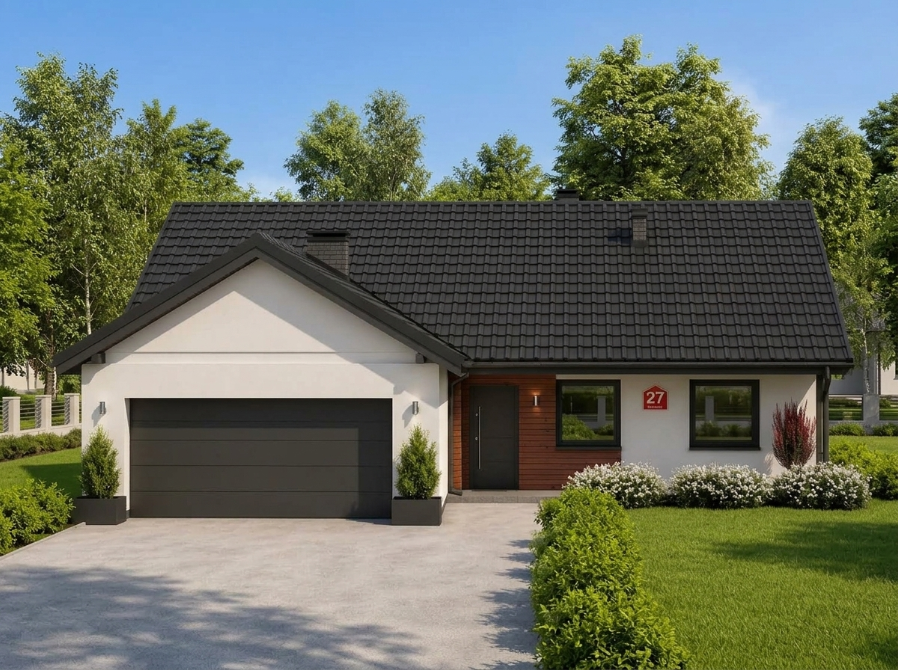
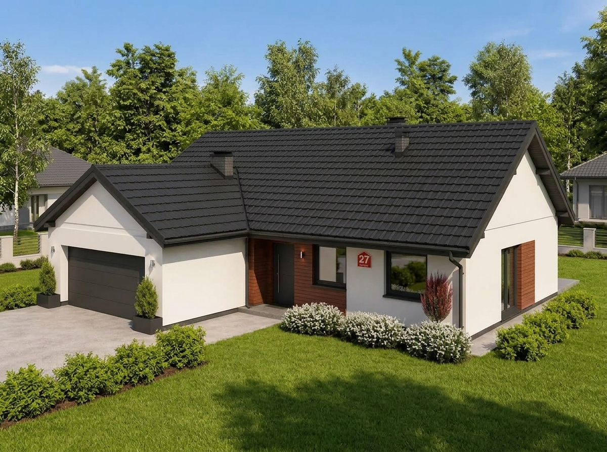
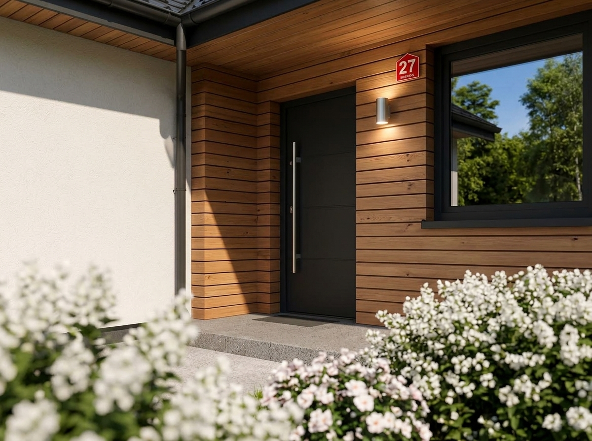
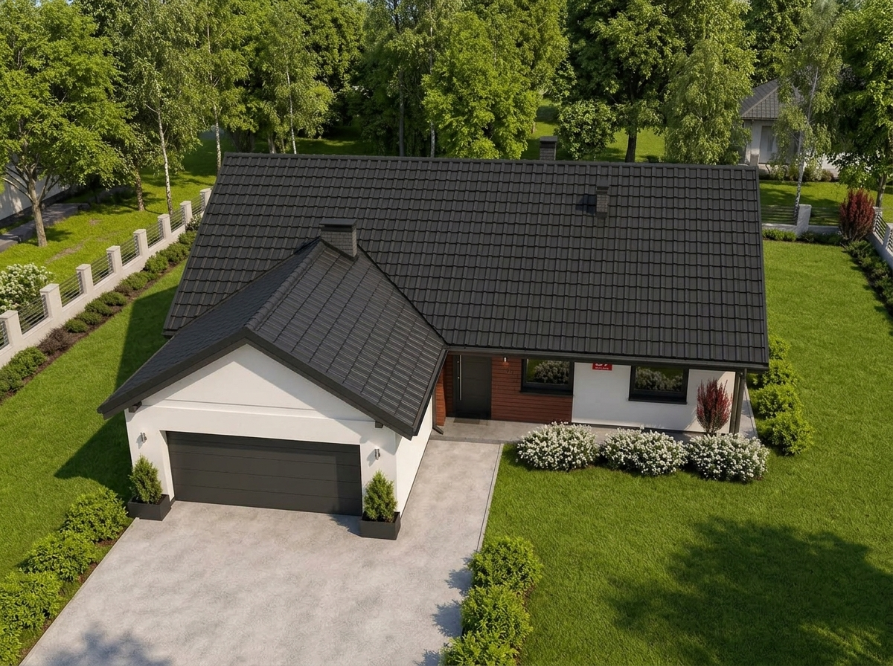
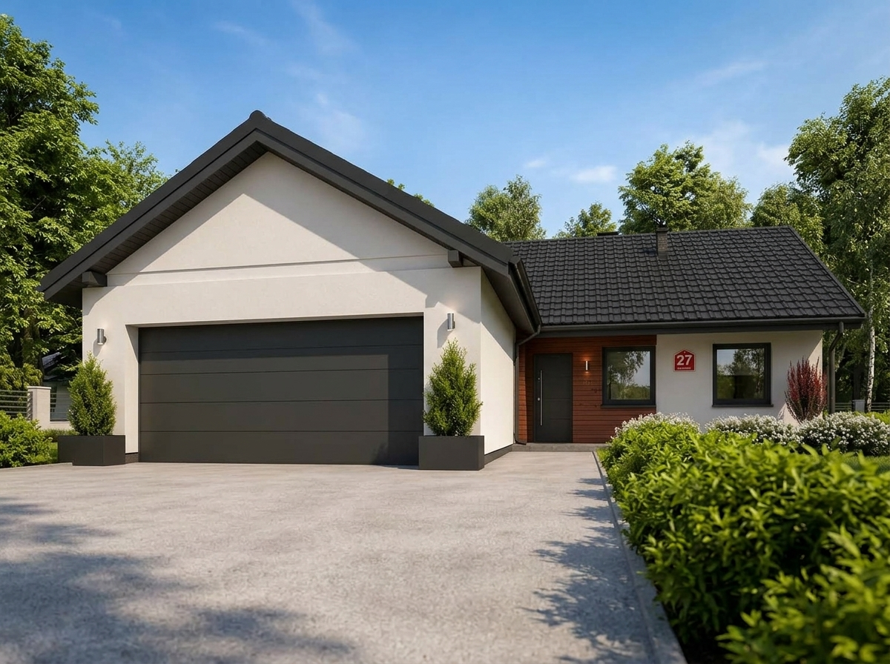
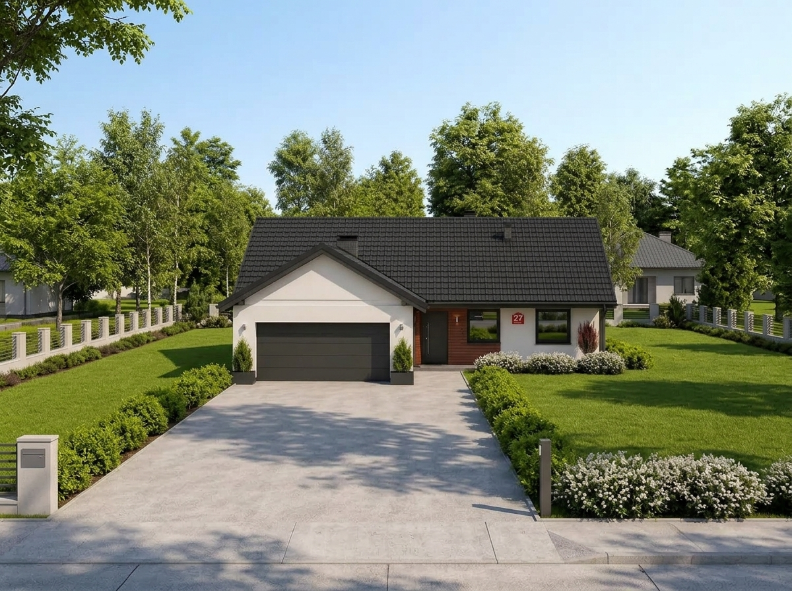
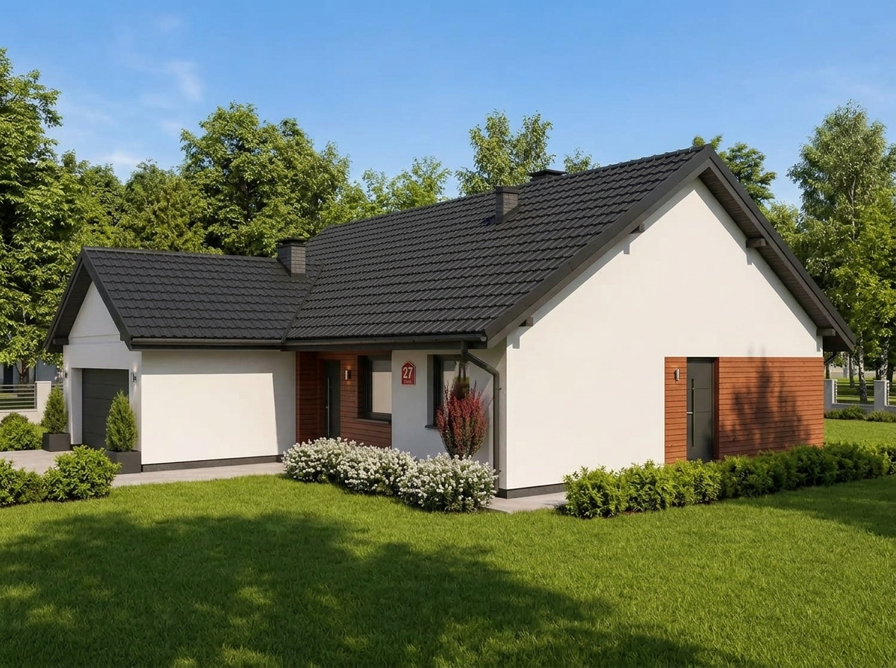

Wygoda jednopoziomowego mieszkania, dach dwuspadowy i harmonijne połączenie bieli z naturalnym drewnem.

Projekt nowoczesnego domu parterowego z garażem to odpowiedź na potrzeby inwestorów ceniących komfort życia na jednym poziomie — bez barier w postaci schodów, z bezpośrednim otwarciem każdego kluczowego pomieszczenia na ogród i prywatny taras.
Zwarty rzut budynku przykryty klasycznym dachem dwuspadowym gwarantuje znakomity stosunek powierzchni użytkowej do kubatury oraz minimalizuje straty ciepła przez przegrody zewnętrzne. Zintegrowany z bryłą budynku garaż jednostanowiskowy tworzy spójną linię frontową, zapewniając wygodne przejście do wnętrza domu bez konieczności wychodzenia na zewnątrz.
Elewacja łączy ponadczasową biel tynku ze szlachetnym ciepłem poziomych lameli z naturalnego drewna w strefie wejściowej oraz antracytową dachówką i stolarką otworową. Tak dobrane materiały nadają budynkowi elegancki, minimalistyczny charakter, doskonale wpisujący się zarówno w podmiejskie osiedla Pomorza, jak i działki w otoczeniu zieleni.
Płynny podział na reprezentacyjną, doświetloną strefę dzienną z widokiem na ogród oraz wyciszoną strefę prywatną z sypialniami i wygodną łazienką.
Zestaw 8 ujęć wysokiej rozdzielczości: widoki z poziomu wzroku, ujęcia ogrodowe, zbliżenia detali oraz rzut z drona.
Zoptymalizowana konstrukcja pod kątem wymagań WT2021, rekuperacji z odzyskiem ciepła oraz instalacji fotowoltaicznej na połaci dachowej.
Projekt przygotowany do szybkiej adaptacji geodezyjno-prawnej, bilansu powierzchni biologicznie czynnej oraz uzyskania pozwolenia na budowę.
Gwarancja spójności założeń projektowych z realnym wykonawstwem na placu budowy — od wytyczenia fundamentów po ostateczny odbiór techniczny.

Prostopadłe ujęcie prezentujące pełną symetrię bryły, podjazd i strefę wejściową.

Kadr pod kątem 3/4 ukazujący elewację z oknami strefy mieszkalnej i nasadzenia zieleni.

Precyzyjny detal podcienia: naturalne lamele z drewna, drzwi z pochwytem i oświetlenie.

Perspektywa z góry prezentująca geometrię dachu dwuspadowego i organizację parceli.

Niska perspektywa fotograficzna nadająca bryle elegancki, wyrazisty charakter architektoniczny.

Widok posesji od frontu wjazdu ukazujący długi podjazd, ogrodzenie i otoczenie drzewostanu.

Kadr wzdłuż bocznej ściany szczytowej ze stolarką tarasową oraz strefą rekreacji ogrodowej.
Kadr reprezentacyjny prezentujący dom od strony frontowo-bocznej z podjazdem i ogrodem.
Skonsultuj założenia architektoniczne, ukształtowanie działki i zapisy planu miejscowego dla domu parterowego bezpośrednio z głównym projektantem.